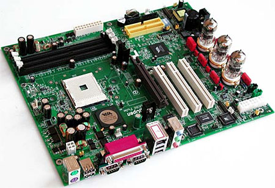

Moederbord

Op deze pagina ga ik het moederbord verder uitleggen door te vertellen wat het is en wat de belangrijkste functies en kenmerken zijn.
Wat is het moederbord?
Een moederbord van een computer is het belangrijkste printplaatcomponent waarop alle andere hardwarecomponenten van de computer zijn aangesloten of gemonteerd. Het is de centrale schakel die verschillende onderdelen met elkaar verbindt en deze met elkaar samen laat werken.
De belangrijkste functies en kenmerken van een moederbord worden hieronder beschreven.
Centrale verwerkingseenheid (CPU) Socket
Het moederbord bevat een speciale aansluiting waarin de CPU wordt geplaatst. De CPU voert alle berekeningen en taken uit.
RAM-slots
Het moederbord heeft openingen waarin RAM-modules kunnen worden geïnstalleerd. RAM (Random Access Memory) is het geheugen dat wordt gebruikt om tijdelijk gegevens en programma's op te slaan die actief worden gebruikt door de computer.
Uitbreidingssleuven
Deze sleuven stellen gebruikers in staat om extra hardwarecomponenten aan te sluiten, geluidskaarten, netwerkkaarten en opslaguitbreidingen.
Aansluitingen
Het moederbord bevat verschillende aansluitingen, waaronder USB-poorten, audio-aansluitingen, SATA-poorten voor harde schijven en SSD's,
om verschillende randapparatuur en opslagapparaten aan te sluiten.
BIOS/UEFI-chip
Deze chip bevat het BIOS (of UEFI): het basisinvoer/uitvoersysteem van de computer. Het regelt de opstartprocedure en geeft toegang tot belangrijke instellingen en configuratieopties.
Voedingsaansluitingen
Het moederbord heeft aansluitingen voor de stroomtoevoer vanuit de voeding van de computer. Deze zorgen ervoor dat de verschillende componenten van de computer van stroom worden voorzien.
Dataconnectoren
Het moederbord heeft ook verschillende dataconnectoren, zoals SATA-aansluitingen voor het aansluiten van opslagapparaten en PCIe-slots voor het aansluiten van uitbreidingskaarten.
Het moederbord verbindt dus alle onderdelen met elkaar, waardoor deze op elkaar kunnen reageren.